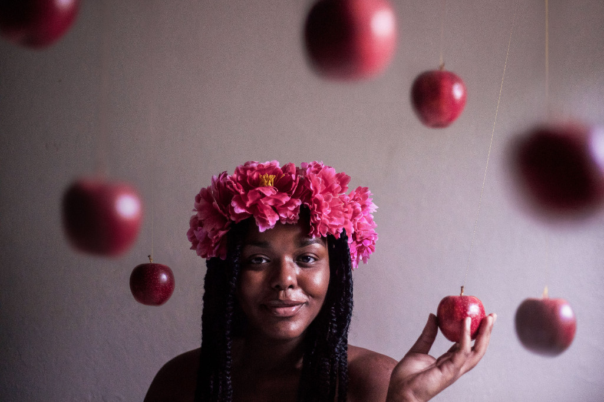

April 2019
Je werkt om geld te verdienen. Je gaat naar school om te leren. Je gaat op vakantie om eens iets anders te doen. Je eet om een verlangen te vervullen. Je sport voor beweging. Je bezoekt familie en vrienden om je sociale contacten te onderhouden. Je doet yoga om rust en balans te vinden.
Klinkt logisch, toch? Maar dit klinkt niet eenvoudig. Het is moeilijk, zo niet onmogelijk, om balans in al deze activiteiten te vinden. Hoeveel werk heb je nodig om genoeg geld te verdienen? Hoeveel yoga geeft voldoende rust?
Je probeert heel veel ballen in de lucht te houden. Alles moet in evenwicht zijn. De verhouding tussen werk en privé bijvoorbeeld of de mate van activiteit en rust of de aandacht voor jezelf of voor je partner. Je zet jezelf onder spanning, iets teveel van het één of het ander en het lijkt mis te gaan. Dat resulteert in stress.
De meeste dingen die we doen, doen we om iets anders te realiseren. Je kunt pas van yoga spreken als je ziet dat er niets te realiseren is. Ook niet met yoga zelf, er is geen rust in de hectiek van alle dag. Welke vorm van yoga je ook gaat doen. Natuurlijk kun je even tot ontspanning komen, maar dat kan ook door even op de bank te gaan liggen. Het is niet blijvend. Het brengt je niet in het evenwicht dat je nodig hebt.
Dat komt omdat yoga niet één van de ballen is die je hoog moet houden. Yoga staat er los van en zorgt er juist voor dat je anders met de bestaande ballen omgaat, dat het aantal ballen verminderd. Als je inziet dat er niets te realiseren is, maar dat het om de activiteit zelf gaat, dan openbaart de echte rust zich vanzelf aan jou. Dat gebeurt alleen maar als je ballen kunt loslaten. De ballen zijn van nature al in evenwicht, ze blijken te zweven, voor zolang dat nodig is.

Laat alles gaan, dat is echte yoga! Denk niet dat je de dingen doet om er iets voor terug te krijgen. Het gaat niet om het resultaat. Want wat gebeurd er als het resultaat anders is dan je verwacht en het niet de door jou gewenste uitkomst heeft? Weer stress.
Het tegenovergestelde van iets krijgen is geven, niet voor jezelf, maar voor een ander. Je kunt werken om geld te verdienen voor jezelf, wat je overigens ook weer uitgeeft aan een ander. Of je kunt vrijwilligerswerk doen om een ander te helpen. Daarin zit geen verschil. Je doet nog steeds werk om iets anders te realiseren.
Er lijkt een mooie balans te kunnen zijn tussen krijgen en geven. Maar dit is hetzelfde dilemma. Want wat is evenwicht, hoeveel moet je geven om jouw krijgen te verantwoorden?
Ook hier geldt: laat het los. Geen zelf, geen ander, dat is veel eenvoudiger. Het hoeft niet uit te maken of je iets voor jezelf doet of voor een ander, je zet je gewoon in.
Echte Yoga helpt je de eenvoud van de dingen te zien en zorgt ervoor dat je kunt onthechten van alle randzaken die er niet toe doen. Als je moet nemen, neem dan. Als je wilt geven, geef dan. Als je wilt werken, werk dan. Maar zonder oordeel, zonder iets goed of slecht te vinden, zonder een resultaat te verwachten. Het leven kan zo eenvoudig zijn, je hoeft het alleen maar te zien en te beleven.
Lees meer BOE blogs
Neem contact op
Ga naar www.ssstil.nl, bij ssstil yoga doen we yoga en meditatie om te leren de dualiteit van alle dag te overstijgen en de allesomvattende stilte bij onszelf te ontdekken. We noemen het yoga, maar je zou het ook de kunst van het leven kunnen noemen.